Kamergotchi (Arjen Lubach)
Kamergotchi 1.x (batchbestanden)(2017-2018, 2020-2021, 2026-heden)
Kamergotchi 1.00
Kamergotchi 1.01
Kamergotchi 1.02
Kamergotchi 1.03
Kamergotchi 1.04
Kamergotchi 1.05
Kamergotchi 1.06
Kamergotchi 1.07
Kamergotchi 1.08
Kamergotchi 1.09
Kamergotchi 1.10
Kamergotchi 2.x (Kamergotchi Online) (2019-2021, 2026-heden)
Kamergotchi Online 2.00
Kamergotchi Online 2.01
Kamergotchi Online 2.02
Kamergotchi Online 2.03
Kamergotchi Online 2.04
Kamergotchi Online 2.05
Kamergotchi Online 2.06
Kamergotchi Online 2.07
Kamergotchi Online 2.08
Kamergotchi Online 2.09
Kamergotchi Online 2.10
Kamergotchi Online 2.11
Kamergotchi Online 2.12
Kamergotchi Online 2.13
Kamergotchi 2.x (Kamergotchi Online Legacyversie) (2020-2021, 2026-heden)
Legacyversie van Kamergotchi Online 2.06
Legacyversie van Kamergotchi Online 2.08
Legacyversie van Kamergotchi Online 2.10
Legacyversie van Kamergotchi Online 2.12
Kamergotchi Online Legacyversie 2.13
Overzicht
Alle spelpagina's bij elkaar
Kamergotchi (Arjen Lubach) (2017)
Kamergotchi (Arjen Lubach) (19 februari 2017 tot 15 maart 2017)
Op 19 februari 2017 introduceerde Arjen Lubach Kamergotchi. In het spel krijg je een willekeurige lijsttrekker en moet je deze verzorgen (http://www.youtube.com/watch?v=_qNjpTn6RUM). Ook werden er soms dingen gezegd over wat de lijsttrekker in het echt was overkomen.In tegenstelling tot alle door mij gemaakte versies, heeft de originele versie een score en moet je een naam opgeven. De hoogste scores waren te vinden op de website van Kamergotchi (www.kamergotchi.nl, de laatste versie van dit overzicht staat hieronder).
Op 5 maart 2017 presenteerde Zondag met Lubach welke Kamergotchi het beste was verzorgd met een Kamergotchi-peiling (http://www.youtube.com/watch?v=8UqpIgK_QMs). 10 dagen later, 15 maart en de dag van der verkiezingen, stopte het spel. Kamergotchi van Arjen Lubach was beschikbaar voor Android 4.1+ en iOS 8.0+.
Kamergotchi 1.x (batchbestanden) (2017-2018, 2020-2021, 2026-heden)
Kamergotchi 1.00 (28 februari 2017)
Toen Kamergotchi uitkwam, kon ik het bijna niet spelen omdat ik zelf geen geschikt apparaat had. In die tijd was ik ideeën die ik had in Windows batchbestanden aan het maken. Ik kreeg het idee om een eigen versie van Kamergotchi voor Windows te maken en ging daarmee aan de slag.Omdat het om Windows batchbestanden ging, kon ik echter niet de Kamergotchi in hetzelfde venster als de rest doen. Hiervoor is een Internet Explorer-venster gebruikt, dit moet echter na het sluiten van het spel handmatig weer worden gesloten. Tevens gaat alle bediening via toetsen indrukken.
Verder is de basis van het spel aanwezig. Kamergotchi's hebben drie behoeften: honger, aandacht en kennis. Deze gaan van 0 tot en met 40, met een beginwaarde van 20. De Kamergotchi heeft zinnen om te zeggen voor als de behoefte onder de 5 komt en kan dood gaan of weglopen als de behoeften 0 worden. Bij een kennis van 0 is er een kans dat de Kamergotchi wegloopt, maar hoeft dit niet. De behoeften nemen na 5 minuten wachten af en dan kan je ze weer aanvullen (behalve kennis, die kan je pas na 10 minuten weer aanvullen). Deze basis is nog steeds aanwezig in nieuwere versies van Kamergotchi, vrije keuzes kwamen hier later bij.
Kamergotchi 1.01 (ongeveer 11 maart 2017)
Vanaf deze versie wordt de Kamergotchi in een Internet Explorer-venster in de kioskmodus weergegeven zodat de knoppen en adresbalk van Internet Explorer niet te zien zijn. Ook wordt het venster bij het afsluiten via het op de x op het toetsenbord drukken automatisch gesloten.Kamergotchi 1.02 (19 maart 2017)
In deze versie zijn het hoofdmenu en meerdere spellen toegevoegd.Er zijn commando's om spellen te laden, maken, verwijderen, hernoemen en te kopiëren. Ook is het vanaf deze versie mogelijk om alles wat de Kamergotchi heeft gezegd van het scherm te halen en om de website van de partij van je Kamergotchi te bezoeken met Internet Explorer. De website opent dan in een nieuw venster. Opgeslagen spellen en de website bezoeken zijn nieuw ten opzichte van Kamergotchi van Arjen Lubach. De laatste verandering is de toevoeging van de tevredenheid van je Kamergotchi als percentage. Dit is een functie uit Kamergotchi van Arjen Lubach en werd daar met een percentage en een wijzer op een gekleurde balk gedaan.
Kamergotchi 1.03 (25 maart 2017)
In deze versie controleerde het installatiebatchbestand voor het eerst of er al een versie van Kamergotchi aanwezig was en vroeg het dan of deze vervangen kon worden door de nieuwe versie. Ook werd voor het eerst vermeld dat Arjen Lubach het spel oorspronkelijk had bedacht. De letterlijke tekst was "het oorspronkelijke Kamergotchi is bedacht door Arjen Lubach, presentator van het VPRO-programma Zondag met Lubach". Tevens zegt de Kamergotchi iets speciaals op 1 januari (Nieuwjaarsdag), 22 oktober (de verjaardag van Arjen Lubach), 5 december (Sinterklaas), 25 december (Eerste Kerstdag) en 31 december (Oudejaarsdag).Kamergotchi 1.04 (26 april 2017)
In deze versie zijn het instellingenmenu en het informatiemenu toegevoegd, met Jan-Peter Balkenende als speciale Kamergotchi voor deze menu's.Het gegevensmenu kan de Kamergotchi-versie tonen, berekenen of er in een jaar Tweede Kamerverkiezingen zijn en wanneer de volgende zijn, op basis van een jaar met verkiezingen en een termijn van vier jaar. Ook kan dit menu informatie geven over alle gebruikte bestandsextensies. Daar zitten een paar aangepaste extensies tussen, zo is .kgper gebruikt voor de png-afbeeldingen van de personages.
In het instellingenmenu kun je het jaar waarin de volgende Tweede Kamerverkiezingen zijn aanpassen. Dit is het referentiepunt voor de berekeningen. Ook kun je bij de instelingen "advanced graphics" aan of uitzetten. Dit is het nieuwe uiterlijk van Kamergotchi met een witte achtergrond, gekleurde tekst en speciale tekens voor lijnen en randen. De kleur van de tekst verschilt per personage. "Advanced Graphcs" staat standaard aan.
In deze versie is er tevens een overzicht van alle Kamergotchi's toegevoegd, dit werkt met een HTML-pagina.
Ten slotte geeft deze versie bij het starten van een nieuw spel een waarschuwing dat als je op het personage klikt (in een venster van Internet Explorer in kioskmodus), het spelvenster en de taakbalk verdwijnen en dat deze met alt+tab terug zijn te halen.
De onderstaande screenshots zijn steeds met en zonder "advanced graphics".
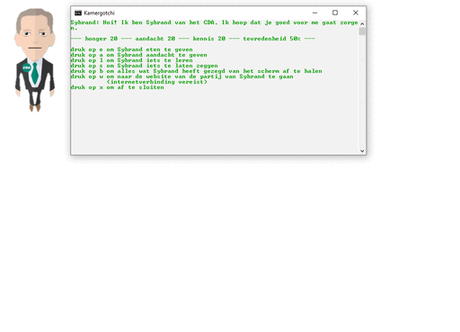
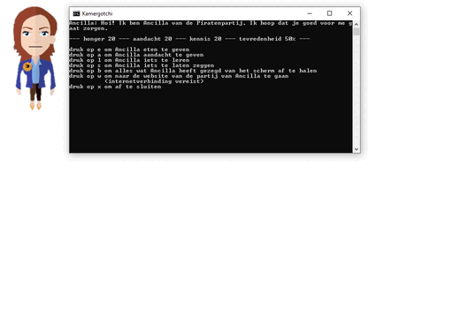
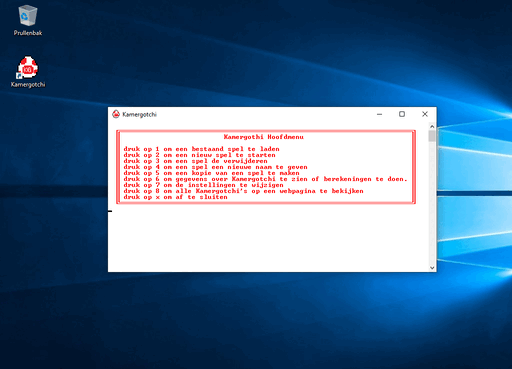
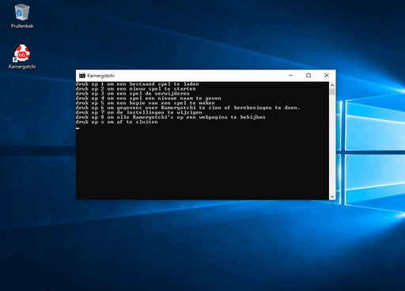
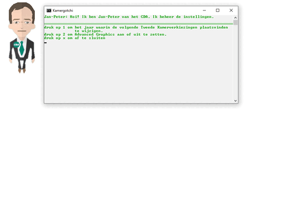
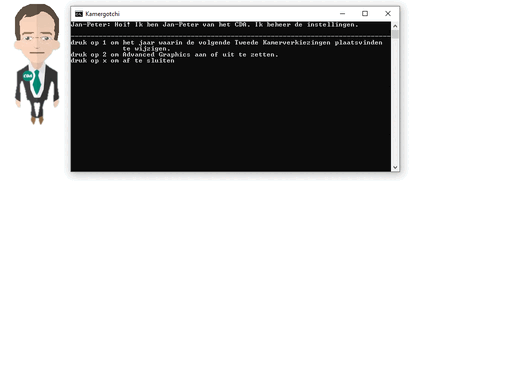
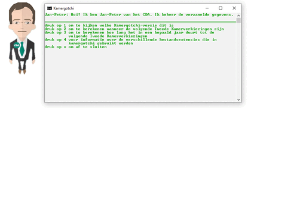
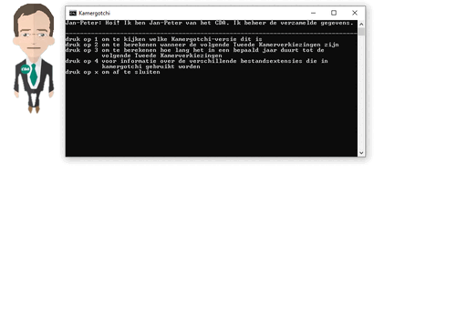
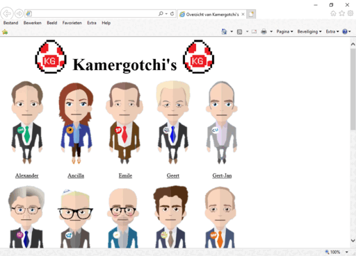
Kamergotchi 1.05 (14 oktober 2017)
Dit is de laatste versie van Kamergotchi 1.x die voor oktober 2020 is afgerond. Er is eind 2017 en begin 2018 wel aan aan Kamergotchi 1.06 gewerkt.In deze versie zijn een aantal grote veranderingen. Zo is er nu een grafisch installatieprogramma (een HTA, HTML Application, met batchbestanden voor het kopiëren en VBScript voor berichten in vensters).
Ook zijn uitbreidingen toegevoegd met nieuwe sets Kamergotchi's. Met de uitbreiding "Kamergotchi Maker" kan je zelfs een eigen Kamergotchi voor in het spel maken.
Verder kan Google Chrome nu gebruikt wordem als Internet Explorer niet aanwezig is en kunnen Kamergotchi's zelf ook in plaats van in de browser in een eigen venstertje worden weergegeven via een HTA (HTML Application). Als je bij het installatieprogramma van Kamergotchi op een paar afbeeldingen klikt, krijg je een speciale Kamergotchi van Arjen Lubach.
Verder is het overzicht gecentreerd en is Kamergotchi Classic (Kamergotchi 1.00 die naast Kamergotchi 1.05 kan bestaan).
De laatste verandering is dat Kamergotchi nu controleert of alle bestanden aanwezig zijn en waarschuwt als er iets ontbreekt. Het spel moet dan worden geherinstalleerd.
De reden waarom er in de advertentie in het installatieprogramma voor het spel staat dat de uitbreidingen op CD-ROM verkrijgbaar zijn, is dat het spel op een floppy, CD-ROM en SD-kaart is opgeslagen voor installatie en dat de uitbreidingen alleen op een aparte CD-ROM stonden.
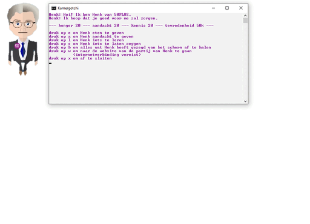
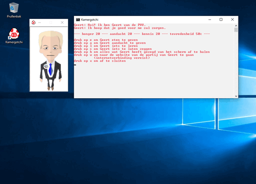
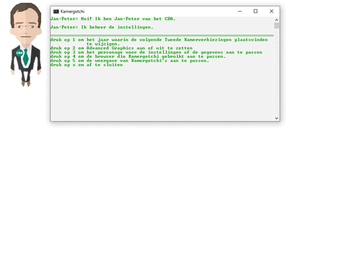
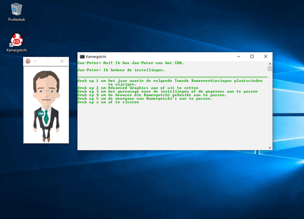
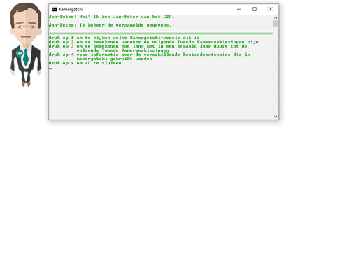
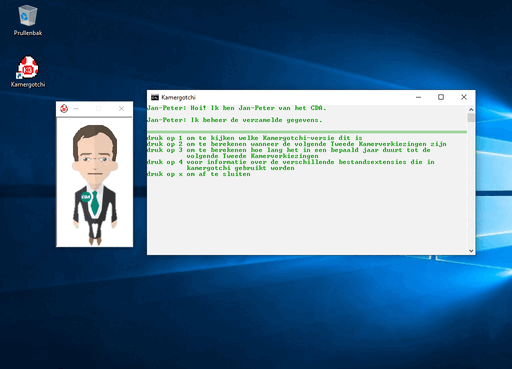
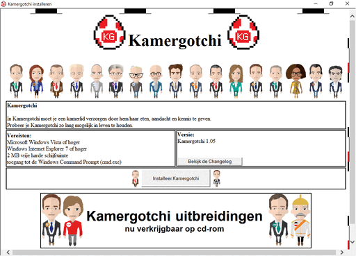
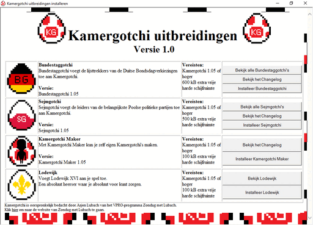
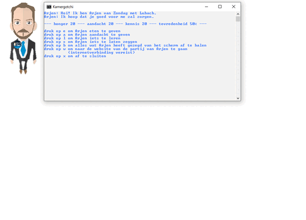
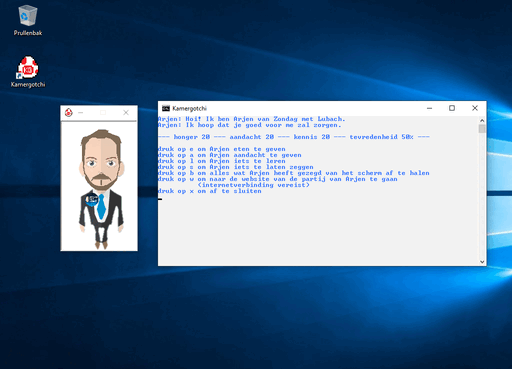
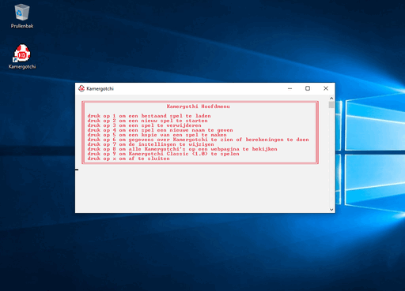
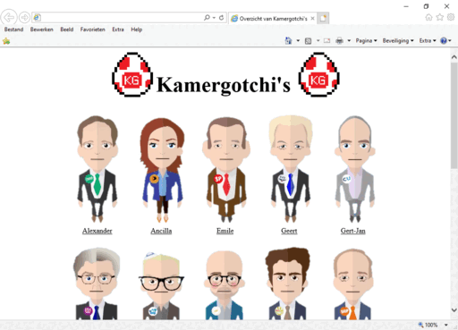
Kamergotchi 1.06
Deze versie is nooit afgemaakt en de bestanden van deze versie voordat ermee is gestopt raakten weg.De grote feature van deze versie is multiplayer: Kamergotchi Social. Dit gaat via een gedeelde map op een netwerkschijf. Er is een chat en je kan elkaars behoeften vervullen. Maar de interesse in verder ontwikkelen, nam even af.
Op 10 mei 2020 zijn in twee oude e-mails een versie van Kamergotchi 1.06 van 11 maart 2018 en een screenshot van Kamergotchi 1.06 met een nieuwe Kamergotchi van Lilian Marijnissen van 4 april 2018 gevonden. Er zijn van 10 tot 12 mei 2020 wat fouten uit gehaald en de Kamergotchi van Lilian Marijnissen is toegevoegd. Uit de mail van 4 april 2018 blijkt dat er daarvoor een tijdje niets aan is gedaan, dus deze versie moet dicht bij de laatste versie die kwijt is zitten. Er zaten geen uitbreidingen bij, de uitbreidingen van Kamergotchi 1.05 werken met versie 1.06. De rest van het programma ziet er hetzelfde uit als Kamergotchi 1.05, de weergave in een klein venster is in deze versie wel de standaardinstelling.
De versie van 12 mei 2020 heeft versies op een 3,5 inch en 5,25 inch floppy-image (.img), een CD-image (.iso) en een zipbestand (.zip). De floppyversie bevat Kamergotchi Classic niet omdat het spel anders te groot is om op één floppy te passen.
Kamergotchi 1.07 (18 oktober 2020)
De Kamergotchi's hebben een grafische update gekregen met de afbeeldingen uit het gedurende 2020 ontwikkelde Kamergotchi Online. Ook vanuit daar (versie 2.04) komt dat je nu voor 2/3 van de keren vrij bent om te bepalen welke behoeften je vult.Het installatieprogramma is ook vernieuwd en heeft nu een advertentie voor de online versie, en er is een niet-grafische versie van het installatieprogramma beschikbaar.
De oude uitbreidingen zijn niet meer ondersteund: Deze werken niet meer en zijn ook niet opnieuw gemaakt.
Verder wordt Windows XP ook ondersteund, met dank aan het het CHOICE-commando uit de Microsoft Windows NT 4.0 Resource Kit. Ook gaat het spel er nu correct mee om als je je bureaublad- of documentenmap hebt verplaatst.
De Kamergotchi van Lilian Marijnissen is weer verwijderd, omdat deze als enige niet bij de Tweede Kamerverkiezingen van 2017 hoort.
Kamergotchi 1.07 is ook weer beschikbaar als floppy-image (3,5 inch en 5,25 inch), CD-image en zipbestand. De floppyversie bevat net als in Kamergotchi 1.06 geen Kamergotchi Classic.
Kamergotchi 1.08 (28 februari 2021)
Kamergotchi 1.08 bevat vooral bugfixes en introduceert uitbreidingen nieuwe stijl. Deze hebben geen apart menu dat vanuit het hoofdmenu te bereiken is, maar zijn meer geïntegreerd in het programma. De enige uitbreiding bij deze versie bestaat uit de oude Kamergotchi's van Kamergotchi 1.00-1.06.Kamergotchi 1.09 (23 september 2021)
Vanaf Kamergotchi 1.09 kunnen Kamergotchi's ook ziek worden. Een zieke Kamergotchi heeft meer aandacht en minder eten en kennis nodig.Verder is Kamergotchi Classic verwijderd omdat die afhankelijk is van Internet Explorer en deze in Windows 11 (en later ook in Windows 10) doorverwijst naar Microsoft Edge en dat hier niet goed werkte. En het hele idee van kamergotchi Classic was dat het een zo min mogelijk bewerkte Kamergotchi 1.00 was.
Verder zijn er nog meer aanpassingen gedaan om Windows 11 te ondersteunen en zijn de afbeeldingen van de Kamergotchi's nu automatisch uit de bronafbeeldingen verkleind met ImageMagick.
Ten slotte past Kamergotchi 1.09 niet meer op één floppy en is het installatieprogramma daarom aangepast: De personages staan nu op een tweede floppy en zijn daarom ook uit het installatieprogramma weggehaald.
Deze versie van Kamergotchi was op 23 september 2021 klaar, maar werd pas op 30 september, tegelijk met zijn partnerversie Kamergotchi Online 2.12, beschikbaar.
Kamergotchi 1.10 (26 september 2026)
Deze versie bevat de nieuwe grafische update: Alle Kamergotchi's worden nu scriptmatig uit svg-bronafbeeldingen gegenereerd.Daarnaast is er een gemeenschappelijk savegame-formaat met Kamergotchi Online en Kamergotci Online Legacy geïntroduceerd om conversies makkelijker te maken.
Microsoft besloot de Windows-component die Kamergotchi voor de tijd gebruikte, WMIC, uit Windows te verwijderen. Daarom is als alternatief ondersteuning voor het veel tragere Powershell toegevoegd, dit wordt alleen gebruikt als WMIC er niet is.
Een andere ondersteuningstoevoeging is Mozilla Firefox als webbrowser.
Verder is het installatieprogramma omgebouwd om van floppy's uit te gaan (de te installeren data in stukken die daarop passen opsplitsen), waarmee de floppy-editie veel makkelijker te onderhouden wordt.
Die floppy-editie heeft nu een floppyschrijver en kan installatiemedia maken op 5,25" of 3,5" floppy's, Double en High Density.
Ten slotte halveert het geluk nu tijdelijk als een Kamergotchi ziek is.


Kamergotchi 2.x (Kamergotchi Online) (2019-2021, 2026-heden)
Kamergotchi Online 2.00 (11 december 2019)
Eind 2019 besloot ik om mijn Kamergotchi te herschrijven in HTML en JavaScript. Dit had een aantal voordelen: een echte grafische interface was dan mogelijk en het spel kon op veel meer draaien dan alleen Windows Vista of hoger (XP was toen nog niet ondersteund in de batchversie). Zo is alleen een webbrowser nodig.De layout van Kamergotchi 2.00 is statisch (het kan niet kleiner dan de grijze rand) en bij een te klein scherm is de chat weg. De basis van het spel (zoals bij Kamergotchi 1.00) is ook hier aanwezig.
Verschillen met Kamergotchi Batch zijn: Opslag van gegevens via cookies in plaats van bestanden op de harde schijf, geluid is aanwezig, de plaatjes van de Kamergotchi's zijn groter en gedetaileerder en ze worden blij of verdrietig als ze erg of weinig tevreden zjn.
Er zijn twee varianten van de pagina: De standaardvariant gebruikt HTML-5 audio, de embed-variant voor Internet Explorer en de oude Microsoft Edge (die met EdgeHTML als engine) gebruikt in plaats daarvan de <embed>-tag. Deze browsers worden doorgestuurd.
Als dit spel voor het eerst wordt gestart of de gegevens zijn gewist, verschijnt er aan het begin een melding dat Kamergotchi oorspronkelijk door Arjen Lubach is bedacht. Triviapunt: Dit is de versie die tegenwoordig overal wordt gebruikt: "Kamergotchi is oorspronkelijk bedacht door Arjen Lubach van het VPRO-programma Zondag met Lubach. <enter> https://www.vpro.nl/zondag-met-lubach.html".
Korte bonus: De Kamergotchi HTA test.
Dit is een vroege poging tot het maken van een grafischere versie van Kamergotchi uit de zomer van 2017 (rond die tijd is het grafische installatieprogramma voor Kamergotchi 1.05 ook geschreven) en is geschreven in HTML en VBScript (dus geen Javascript, wat uiteindelijk werd gebruikt).
Deze test kan maar twee dingen: een willekeurige Kamergotchi kiezen en deze iets laten zeggen. Ik kon in die tijd niet vinden hoe ik een aantal essentiële dingen in VBScript moest doen en heb verder niets met deze test gedaan. Hij deelt dan ook geen code met Kamergotchi Online, maar is een voorganger in de geest.
Dit is de enige versie van Kamergotchi (naast die van Arjen Lubach) waar de Kamergotchi uit een ei komt.
Tweede bonus: Deze screenshots zijn van een kopie van Kamergotchi Online die op 7 december 2019 is gemaakt, 4 dagen voor versie 1.00 uit kwam. Zie het als een toevallige bèta.
Er zijn nog geen instellingen, geluid, chat en achtergrondkleur. In plaats van de chat is iedere melding een pop-up.
Kamergotchi Online 2.01 (23 december 2019)
In deze versie is de lay-out wat dynamischer gemaakt voor gebruik met verschillende resoluties. Bij te lage resoluties gaan de knoppen over de Kamergotchi heen, deze versie is dus nog niet geschikt voor mobiele telefoons.Ook is er een derde variant van het spel voor Internet Explorer 6 gemaakt omdat transparante png's daar niet werken. Deze heeft daarom een witte achtergrond en afbeeldingen van de Kamergotchi die niet transparant zijn. De transparante afeeldingen op de knoppen zijn dan gif's in plaats van png's.
Kamergotchi Online 2.02 (5 januari 2020)
Deze versie is geschikt voor mobiele telefoons, hoewel nog niet alles optimaal werkt qua uitlijning van de knoppen. De afbeelding van de lijsttrekker krimpt bij te weinig ruimte en het spel bestaat nu uit twee kolommen die bij te weinig ruimte los van elkaar omhoog en omlaag te bewegen zijn. De chat zit in één van de kolommen en heeft nu een witte achtergrond.Er is ook een knop toegevoegd om de chat te legen.
De drie verschillende versies zijn samengevoegd, dit zijn nu standen in één bestand waartussen te schakelen is in de instellingen.
Verder is het Kamergotchi-overzicht uit Kamergotchi Batch ook toegevoegd. Deze staat in een apart bestand en krijgt de gewenste stand doorgegeven.
Ook wordt indien mogelijk in plaats van cookies de nieuwere HTML5 LocalStorage gebruikt om gegevens op te slaan.
Ten slotte zegt de Kamergotchi nu hoeveel minuten je nog moet wachten voordat je hem/haar weer eten, aandacht of kennis kan geven, in plaats van altijd 5 of 10 minuten.
Kamergotchi Online 2.03 (27 januari 2020)
Deze versie voegt modules toe: Alle tekst in het spel en alles over de personages staat nu in de module.Dit maakt het mogelijk om een nieuwe set Kamergotchi's naast de oude te maken en om het spel te vertalen. Er zijn nieuwe modules gemaakt voor de Tweede Kamerverkiezingen van 2021 en de Poolse presidentsverkiezingen van 2020. Die laatste module is dan ook toepasselijk in het Pools.
Ook zijn de knoppen om de browser te kiezen samengevoegd zoals met de volumenknoppen al het geval was: Er is één knop waarmee je steeds naar de volgende optie gaat. De tekst op de knop verandert steeds naar de volgende optie.
Alle detectie is veranderd van een lijst met browsers naar detectie op ondersteuning van verschillende functies.
Ten slotte is er ook een optie toegevoegd om de achtergrondmuziek uit te zetten, maar de rest van de geluiden aan te laten.
Kamergotchi Online 2.04 (6 mei 2020)
Er zijn in deze versie twee features uit Kamergotchi van Arjen Lubach toegevoegd: De behoeften van de Kamergotchi nemen nu ook langzaam af als het een bepaalde tijd geleden is dat het spel voor het laatst is gespeeld en je kan voor 2/3 kiezen wat je ophoogt in plaats van 3x honger, 3x aandacht en 3x kennis. In de versie van Arjen Lubach zijn alle keuzes vrij.Deze versie is in veel verschillende browsers getest en er is een screenshotpagina toegevoegd met alle browsers waar het werkt.
De overzichtspagina is nu geen apart bestand meer, maar zit in het spel. Er is een knop om terug te gaan naar het hoofdmenu.
In de ontwikkeling van deze versie is geëxperimenteerd met Flash voor het geluid in oudere browsers ter vervanging van de <embed>-methode, maar fouten in Flash konden ervoor zorgen dat het hele spel niet meer draaide en dit is daarom geschrapt. De <embed>-methode werkte maar zeer beperkt en werd daarom ook niet meer teruggezet. Er is dus alleen geluid in browsers die HTML5-audio onderstenen.
De lay-out is weer aangepast omdat dit praktischer bleek: De twee kolommen zijn niet meer apart omhoog en omlaag te doen bij ruimtegebrek en de chat is naar beneden verplaatst.
Er is een derde weergavemodus toegevoegd voor schermen met 2 of 16 kleuren: Alles in zwart-wit. De andere weergavemodussen zijn die met transparante png's voor nieuwere browsers en die met niet-transparante png's voor de oudere.
Het logo van Kamergotchi is iets aangepast en er zijn veel verschillende maten icoontjes gemaakt voor bijvoorbeeld vastzetten op het startscherm op mobiele apparaten.
Trivia: Dit is de eerste versie die voor iedereen op het internet toegankelijk was. Kamergotchi 2.03 was gedurende een paar uur toegankelijk omdat de server er al was, maar versie 2.04 toen nog niet af was. Er bleken ook een aantal dingen in Kamergotchi 2.03 het op het internet niet te doen.
Kamergotchi Online 2.05 (20 mei 2020)
Er is nu te zien hoeveel dagen je Kamergotchi in leven is en ze herinneren je er soms aan om te gaan stemmen voor de verkiezingen waar ze bij horen. Ook kan je ze vragen wanneer die zijn.Ook worden nu eerst de verplichte keuzes gebruikt en dan de vrije, dat was eerst omgedaaid.
Na de vondst van Kamergotchi 1.04 is met deze versie mee ook deze geschiedenispagina geïntroduceerd. Daar was die te downloaden voordat de pagina voor de batchversie werd gemaakt.
Ook zijn er twee nieuwe modules toegevoegd: Kamergotchi's voor de Amerikaanse presidentsverkiezingen van 2020 en de verschillende Nederlandse koningen en koninginnen.
Het van module wisselen gaat ook vloeiender en er zijn waarschuwingen toegevoegd voordat je een nieuw spel start of alle spelgegevens verwijdert.
Kamergotchi Online 2.06 (13 juni 2020)
Deze versie voegt een vierde weergavemodus toe met vectorafbeeldingen, zodat het werkt in iedere resolutie, van een telefoon tot een 4- of 8k-tv. Helaas werkt deze modus niet goed in Internet Explorer en daarom wordt voor de screenshots overgeschakeld op Microsoft Edge.Verder is er in de vectormodus een donkere modus toegevoegd. Deze staat automatisch aan als de browser in de donkere modus staat en kan ook aan on uit gezet worden in de instellingen.
Indien een functie (geluid of de donkere modus) niet ondersteunt wordt, geeft de Kamergotchi van de instellingen dit nu aan in plaats van dat er gewoon niets gebeurt.
Hier is ook de legacyversie voor het eerst geïntroduceerd.
Kamergotchi Online 2.07 (8 juli 2020)
In deze versie is de kern van het spel meer losgemaakt van de webpagina zelf om meerdere thema's te kunnen gaan ondersteunen, hoewel die nog niet zijn gemaakt. Hiermee bestaat het spel nu dus uit drie componenten: Kern, module en shell (webpagina). Ondersteuning voor de donkere modus is uitgebreid naar de modus met transparante png's.Wegens een cookielimiet is er overgegaan van losse cookies naar alle waarden voor een module in één cookie gescheiden door een >. Hiermee werkt het spel ook gelijk in Netscape 6.1, Netscape 6.2 en Opera 7. Kamergotchi Online werkt daarmee nu in alle bekendere browsers vanaf de periode 2000-2003.
Ten slotte is er bij de instellingen een knop toegevoegd waarmee je de Kamergotchi van de instellingen om een e-mailadres om mij te bereiken kan vragen.
Kamergotchi Online 2.08 (8 augustus 2020)
In deze versie is het logo van kamergotchi Online aangepast, dit was namelijk het enige in het spel dat in de pixel-art stijl was.Verder zijn er twee functies uit de batchversie toegevoegd: tekst in de chat is gekleurd afhankelijk van de Kamergotchi en de kamergotchi wijst de gebruiker op feestdagen of andere belangrijke data.
Ook veranderen de links op de spelpagina nu van kleur samen met de rest van de tekst en zijn er modules met alle Kamergotchi's in het Nederlands, Engels (VS) en Pools toegevoegd. De Kamergotchi voor de instellingen wordt hier willekeurig gekozen.
Ten slotte wordt iedere browser nu automatisch doorgeleid naar de juiste versie (gewoon of legacy) voor die browser.
Kamergotchi Online 2.09 (18 oktober 2020)
Met een nieuw type knop voor Internet Explorer 5.0 stapt Kamergotchi Online de 20e eeuw in. Dit was ook de oplossing voor Mozilla 0.7 (de Mozilla Application Suite, niet Firefox), Mozilla 0.6 en Netscape 6.0.Tevens is er een blauwe rand toegevoegd aan de screenshots- en geschiedenispagina en is er een browsertest toegevoegd. Deze wordt vriendelijk gehost door Tim Berners-Lee en Nicola Pellow.
Er is ook een programma toegevoegd om opgeslagen spellen van Kamergotchi 1.07 te bewerken (KGEdit), deze kan ook converteren van en naar de batchversie (alleen voor de module voor de Nederlanse verkiezingen van 2017).
Er zijn meer Kamergotchi's voor de Tweede Kamerverkiezingen van 2021 toegevoegd en deze module is ook de standaardmodule geworden (behalve als de browser in het Pools is, dan is de Poolse module de standaard).
De vraag om een nieuw spel te starten en die om alle gegevens te verwijderen, wordt nu in een dialoog op de pagina gesteld en niet via een losse pop-up omdat die sommige browsers geblokkeerd (kunnen) worden.
Kamergotchi Online 2.10 (28 februari 2021)
In deze versie is er voor het eerst een alternatief thema voor Kamergotchi beschikbaar: Windows 3.1. Dit was al sinds versie 2.07 mogelijk, maar er was er nog geen gemaakt.Ook zijn er een aantal Kamergotchi's toegevoegd aan de module voor de Tweede Kamererkiezingen van 2021: Hugo de Jonge is als lijsttrekker van het CDA vervangen door Wopke Hoekstra en Lodewijk Asscher is als lijsttrekker van de PvdA vervangen door Lilianne Ploumen. Joost Eerdmans van JA21 is ook toegevoegd.
Verder is er nog een nieuwe module toegevoegd: De zoektocht naar een nieuwe souverein voor de Nederlanden na het Plakkaat van Verlatinghe (1581, tijdens de Tachtigjarige Oorlog). De eerste kandidaat hiervoor was Frans van Anjou. Daarna kwam Robert Dudley, graaf van Leichester. Beide personen bleken ongeschikt en de Staten-Generaal (in de module vertegenwoordigd door Johan van Oldenbarnevelt) deden het landelijk bestuur daarom daarna zelf.
De screenshotspagina, geschiedenispagina en KGEdit hebben ook een nieuwe lay-out gekregen en de foutenpagina voor als er geen JavaScript is, is ook vernieuwd om in letterlijk iedere webbrowser te werken. Dus ook de allereerste, WorldWideWeb uit 1991. De huidige versie van deze pagina is hier te zien.
De legacyversie is ook meer compatible, met Opera 3 werkt die dus in iedere browser die JavaScript ondersteunt.
Kamergotchi Online 2.11 (15 maart 2021)
Kamergotchi Online 2.11 is een kleine update: Alle svg's waren uit png's gegenereerd met behulp van een website, maar die veranderde ineens wat aan de methodiek waardoor het resultaat er anders uit zag (dit was al zo bij de Kamergotchi van Lilianne Ploumen uit de vorige versie). De nieuwe svg's zijn met een vectoriseringsscript (color_trace) en Inkscape gemaakt.Ook is de Kamergotchi van Thierry Baudet vervangen door de versie zonder baard en wordt er nu een Kamergotchi van Arjen Lubach weergegeven als een afbeelding van een Kamergotchi niet kan worden gevonden. Deze is ook samen met Tim en Nicola van de browsertest toegevoegd aan de module met alle Kamergotchi's.
De legacyversie en batchversie zijn niet geüpdatet.
Kamergotchi Online 2.12 (30 september 2021)
Kamergotchi Online 2.12 is een grote update die ook wat nieuws aan de basisfuncties van het spel toevoegt: Kamergotchi's kunnen nu ziek worden. Een zieke Kamergotchi heeft extra aandacht (en daarom minder eten en kennis) nodig. Na een aantal beurten wordt de Kamergotchi weer beter.Verder zijn de modules aangepast zodat deze op aanvraag laden in plaats van allemaal tegelijk aanwezig moeten zijn.
Dee copyrightmelding wordt nu op een aparte pagina weergegeven en niet als pop-up, waarbij taalselectie dan ook gelijk mogelijk is. Ieder thema en deze beginpagina zitten in een fullscreen <iframe>, zodat de URL niet meer verandert bij het schakelen (behalve op de Nintendo DS, die geeft weinig ruimte met frames)
Ook worden veel instellingen zoals de beginwaarden en de beschikbare modules en thema's geregeld via een configuratiebestand, de knoppen hiervoor worden gegenereerd.
Een aantal algemene functies die ook voor andere websites nuttig kunnen zijn, staan ook in een apart bestand (de Toolbox).
Als laatste komt Henk Trol uit Keezer's Quest op 1 april langs voor een dansje.
KGEdit kan nu ook opslaan in de formaten van oudere Kamergotchi-versies en heeft twee bewerkingsmodi (uitgesplitst in variabelen en alles als één string).
De browsertest geeft de output altijd in tekstvelden omdat de modernere manier problemen gaf in oudere versies van Konqueror.
De foutenpagina voor als er geen Javascript is, heeft nu een ASCII Art Kamergotchi-ei omdat de renderer bij de speciale zoekmachine voor oude computers FrogFind om probeert te zetten en hierbij het kopje eronder in gewone tekst verandert.
Het volume van de muziek in het spel is ook verlaagd.
Ten slotte is de mogelijkheid om HTTPS te gebruiken aan Kamergotchi Online toegevoegd omdat de webserver dit nu ondersteunde.
Kamergotchi Online 2.13 (26 september 2026)
Kamergotchi Online 2.13 bevat de nieuwe grafische update (alle personages worden vanuit bron-svg's gegenereerd, want dat geeft betere SVG's dan het automatisch converteren uit een png).Dit was alleen best wel wat werk en daarom is besloten om alle modules buiten de basisset en de aangepaste Kamergotchi weg te gooien.
Daarnaast introduceert deze update het gemeenschappelijke save-formaat met Kamergotchi Batch en Kamergotchi Online Legacyversie. Dit maakt conversie makkelijker, en KGEdit kon hiermee ook flink vereenvoudigd worden.
Verder hebben Kamergotchi's als ze ziek zijn nu een thermometer in hun mond en is het geluk dan tijdelijk de helft van wat het normaal is.
De donkere modus is ook verbeterd en de rest van de website (geschiedenis, screenshots en zo) is geherstructureerd en toegankelijker gemaakt voor oude browsers en mensen met weinig data met gif-thumbnails.
Als laatste is Kamergotchi Online nu ook offline beschikbaar: Het is ingepakt als een Electron-app voor Windows, Mac en Linux. Deze is te downloaden van de downloadpagina. Voor Windows is er ook een HTA-versie voor Windowsversies voor Windows 7.
Hier was met Kamergotchi Online 2.03 ook al een keer mee geëxperimenteerd, maar toen is daar na één versie weer mee gestopt omdat het in de vorm van toen weinig toevoegde.


Kamergotchi Online Legacyversie
Legacyversie van Kamergotchi Online 2.06 (13 juni 2020)
Kamergotchi Online voegde met versie 2.6 een speciale legacyversie toe voor browsers die ouder zijn dan Internet Explorer 5.5, Internet Explorer 5.0 voor Macintosh, Netscape 7 en Opera 8.Deze werkt volledig in Netscape 2.0 uit 1995, de eerste webbrowser die JavaScript ondersteunde, en in Internet Explorer 3.0. De enige browser die niet werkt, is Opera 3.
Omdat tekst op de pagina wijzigen niet werkte, werd gebruik gemaakt van pop-up-vensters.
Er is hier ook maar één Kamergotchi: Een zwart-witversie van de geheime Kamergotchi van Arjen Lubach uit Kamergotchi Batch.


Legacyversie van Kamergotchi Online 2.07 (8 juli 2020)
De infomatie onderop de pagina en de knop om de spelgegevens te verwijderen zijn in de tabel gebracht voor een betere lay-out en er zijn jaren '90-stijl "werkt met"-gifjes toegevoegd voor de minimaal ondersteunde browsers.
Legacyversie van Kamergotchi Online 2.08 (8 augustus 2020)
Deze versie bevat een doorslaggevende verbetering: Er stond een methode de inhoud van tekstinputs op de pagina te veranderen in het boek "Het complete handboek HTML voor Internet" van Mark Brown, John Jung en Tom Savola uit 1996.Hierdoor was het niet meer nodig om allemaal irritante pop-ups te gebruiken en kon deze versie verder worden doorontwikkeld.

Legacyversie van Kamergotchi Online 2.09 (18 oktober 2020)
Omdat 1 chatregel wat krap was, is er een tweede toegevoegd en zijn de berichten gesplitst.Het enige nadeel is dat dat er niet altijd goed uit ziet omdat verschillende browsers verschillende tekstbreedtes in die velden hebben.

Legacyversie van Kamergotchi Online 2.10 (28 februari 2021)
Vanaf deze versie is het spel ook compatible met Opera 3 en werkt die dus in iedere browser die JavaScript ondersteunt.
Legacyversie van Kamergotchi Online 2.12 (30 september 2021)
Kamergotchi Online 2.11 had geen wijzigingen aan de legacyversie en omdat die twee toen nog aan elkaar hingen, is dat versienummer overgeslagen.In versie 2.12 zijn er een tweede personage (Nicola Pellow van de browsertest) en een 256-kleurenmodus toegevoegd met behulp van een <frameset>.
Ook kunnen Kamergotchi's vanaf nu ziek worden. Een zieke Kamergotchi heeft extra aandacht (en daarom minder eten en kennis) nodig. Na een aantal beurten wordt de Kamergotchi weer beter.


Kamergotchi Online Legacyversie 2.13 (26 september 2026)
Vanaf deze versie staat de legacyversie op zichzelf als een ietwat beperkte maar volwaardige editie van Kamergotchi, naast Kamergotchi Batch en de standaardversie van Kamergotchi Online.Door een verdere benutting van de <frameset> die in de vorige versie is toegevoegd, gecombineerd met een zelfgeschreven vervanger voor string.split() in plaats van alles een vaste lengte te moeten geven, kwam de weg vrij om ook hier het nieuwe gemeenschappelijke save-formaat te gaan gebruiken en meer personages toe te voegen zonder dat het ingewikkeld werd.
Ook geeft de Kamergotchi nu aan hoe lang het nog duurt voordat een behoefte weer aangevuld kan worden, wordt het geluk tijdelijk gehalveerd als een Kamergotchi ziek wordt en kent de legacyversie nu een personage-overzicht.
Een gevolg van de upgrade naar een volledige versie is dat Arjen en Nicola er nu niet meer in zitten.